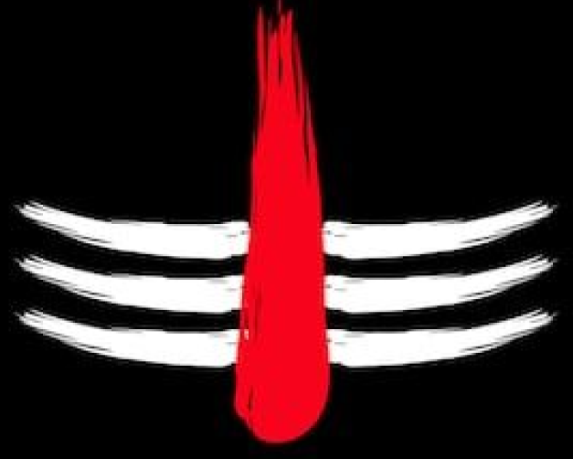

मृत्युंजय महादेव त्राहिमां शरणागतम |
जन्म मृत्यु जरा व्याधि पीड़ितं कर्म बंधनः ||
શ્રી નંદિકેશ્વર મહાદેવ ટ્રસ્ટ
ઈતિહાસ
ઉત્તર અમેરિકામાં એક નોંધપાત્ર ગુજરાતી બોલનાર વસ્તી, ખાસ કરીને ન્યુ યોર્ક શહેર મહાનગર વિસ્તાર અને ગ્રેટર ટોરોન્ટો વિસ્તારમાં, અસ્તિત્વ ધરાવે છે, જે અનુક્રમે ૧,૦૦,૦૦૦થી વધુ અને ૭૫,૦૦૦થી વધુ વક્તાઓ ધરાવે છે. એ સિવાય એ અમેરિકા અને કેનેડાના મોટાભાગના મહાનગર વિસ્તારોમાં પણ અસ્તિત્વમાં છે. ૨૦૧૧ની વસતિ ગણતરી મુજબ, ગ્રેટર ટૉરન્ટો વિસ્તારના ગુજરાતી સત્તરમી સૌથી વધુ બોલાતી ભાષા છે, અને હિન્દુસ્તાની (હિન્દી-ઉર્દૂ), પંજાબી અને તમિલ પછીનીઅને તમિલ પછીની ચોથી સૌથી વધુ બોલાતી દક્ષિણ એશિયન ભાષા છે.
ઉત્તર અમેરિકામાં એક નોંધપાત્ર ગુજરાતી બોલનાર વસ્તી, ખાસ કરીને ન્યુ યોર્ક શહેર મહાનગર વિસ્તાર અને ગ્રેટર ટોરોન્ટો વિસ્તારમાં, અસ્તિત્વ ધરાવે છે, જે અનુક્રમે ૧,૦૦,૦૦૦થી વધુ અને ૭૫,૦૦૦થી વધુ વક્તાઓ ધરાવે છે. એ સિવાય એ અમેરિકા અને કેનેડાના મોટાભાગના મહાનગર વિસ્તારોમાં પણ અસ્તિત્વમાં છે. ૨૦૧૧ની વસતિ ગણતરી મુજબ, ગ્રેટર ટૉરન્ટો વિસ્તારના ગુજરાતી સત્તરમી સૌથી વધુ બોલાતી ભાષા છે, અને હિન્દુસ્તાની (હિન્દી-ઉર્દૂ), પંજાબી અને તમિલ પછીની ચોથી સૌથી વધુ બોલાતી દક્ષિણ એશિયન ભાષા છે.
હેતુ અને ઉદ્દેશ
ઉત્તર અમેરિકામાં એક નોંધપાત્ર ગુજરાતી બોલનાર વસ્તી, ખાસ કરીને ન્યુ યોર્ક શહેર મહાનગર વિસ્તાર અને ગ્રેટર ટોરોન્ટો વિસ્તારમાં, અસ્તિત્વ ધરાવે છે, જે અનુક્રમે ૧,૦૦,૦૦૦થી વધુ અને ૭૫,૦૦૦થી વધુ વક્તાઓ ધરાવે છે. એ સિવાય એ અમેરિકા અને કેનેડાના મોટાભાગના મહાનગર વિસ્તારોમાં પણ અસ્તિત્વમાં છે. ૨૦૧૧ની વસતિ ગણતરી મુજબ, ગ્રેટર ટૉરન્ટો વિસ્તારના ગુજરાતી સત્તરમી સૌથી વધુ બોલાતી ભાષા છે, અને હિન્દુસ્તાની (હિન્દી-ઉર્દૂ), પંજાબી અને તમિલ પછીનીઅને તમિલ પછીની ચોથી સૌથી વધુ બોલાતી દક્ષિણ એશિયન ભાષા છે.
ઉત્તર અમેરિકામાં એક નોંધપાત્ર ગુજરાતી બોલનાર વસ્તી, ખાસ કરીને ન્યુ યોર્ક શહેર મહાનગર વિસ્તાર અને ગ્રેટર ટોરોન્ટો વિસ્તારમાં, અસ્તિત્વ ધરાવે છે, જે અનુક્રમે ૧,૦૦,૦૦૦થી વધુ અને ૭૫,૦૦૦થી વધુ વક્તાઓ ધરાવે છે. એ સિવાય એ અમેરિકા અને કેનેડાના મોટાભાગના મહાનગર વિસ્તારોમાં પણ અસ્તિત્વમાં છે. ૨૦૧૧ની વસતિ ગણતરી મુજબ, ગ્રેટર ટૉરન્ટો વિસ્તારના ગુજરાતી સત્તરમી સૌથી વધુ બોલાતી ભાષા છે, અને હિન્દુસ્તાની (હિન્દી-ઉર્દૂ), પંજાબી અને તમિલ પછીની ચોથી સૌથી વધુ બોલાતી દક્ષિણ એશિયન ભાષા છે.
વાર્ષિક કામગીરી
ઉત્તર અમેરિકામાં એક નોંધપાત્ર ગુજરાતી બોલનાર વસ્તી, ખાસ કરીને ન્યુ યોર્ક શહેર મહાનગર વિસ્તાર અને ગ્રેટર ટોરોન્ટો વિસ્તારમાં, અસ્તિત્વ ધરાવે છે, જે અનુક્રમે ૧,૦૦,૦૦૦થી વધુ અને ૭૫,૦૦૦થી વધુ વક્તાઓ ધરાવે છે. એ સિવાય એ અમેરિકા અને કેનેડાના મોટાભાગના મહાનગર વિસ્તારોમાં પણ અસ્તિત્વમાં છે. ૨૦૧૧ની વસતિ ગણતરી મુજબ, ગ્રેટર ટૉરન્ટો વિસ્તારના ગુજરાતી સત્તરમી સૌથી વધુ બોલાતી ભાષા છે, અને હિન્દુસ્તાની (હિન્દી-ઉર્દૂ), પંજાબી અને તમિલ પછીનીઅને તમિલ પછીની ચોથી સૌથી વધુ બોલાતી દક્ષિણ એશિયન ભાષા છે.
ઉત્તર અમેરિકામાં એક નોંધપાત્ર ગુજરાતી બોલનાર વસ્તી, ખાસ કરીને ન્યુ યોર્ક શહેર મહાનગર વિસ્તાર અને ગ્રેટર ટોરોન્ટો વિસ્તારમાં, અસ્તિત્વ ધરાવે છે, જે અનુક્રમે ૧,૦૦,૦૦૦થી વધુ અને ૭૫,૦૦૦થી વધુ વક્તાઓ ધરાવે છે. એ સિવાય એ અમેરિકા અને કેનેડાના મોટાભાગના મહાનગર વિસ્તારોમાં પણ અસ્તિત્વમાં છે. ૨૦૧૧ની વસતિ ગણતરી મુજબ, ગ્રેટર ટૉરન્ટો વિસ્તારના ગુજરાતી સત્તરમી સૌથી વધુ બોલાતી ભાષા છે, અને હિન્દુસ્તાની (હિન્દી-ઉર્દૂ), પંજાબી અને તમિલ પછીની ચોથી સૌથી વધુ બોલાતી દક્ષિણ એશિયન ભાષા છે.
ટ્રસ્ટીઓ

અશોક જયંતીલાલ પાઠક
પ્રમુખ

હેમંત વાસુદેવ જોશી
મંત્રી

યોગેન્દ્ર અનિરુદ્ધ પાઠક
ખજાનચી

ડૉ. જનાર્દન હૈગ્રીવ પાઠક
ટ્રસ્ટી

યોગેશ પ્રમોદચંદ્ર શુક્લ
ટ્રસ્ટી

હરેશ ચુનીભાઈ પાઠક
ટ્રસ્ટી

દિલીપ શાંતિલાલ પાઠક
ટ્રસ્ટી

જયેશ રેવાશંકર શુક્લ
ટ્રસ્ટી

નિલેશ શિવકુમાર પાઠક
ટ્રસ્ટી

વિમલ ગોવિંદભાઇ પાઠક
ટ્રસ્ટી

શ્રીપાદ નિરંજન પાઠક
ટ્રસ્ટી

ધર્મેન્દ્ર રજનીકાંત પાઠક
ટ્રસ્ટી

મૌલિક ભરતભાઈ પાઠક
ટ્રસ્ટી

પ્રજ્ઞેશ ઘનશ્યામ વૈદ્ય
ટ્રસ્ટી